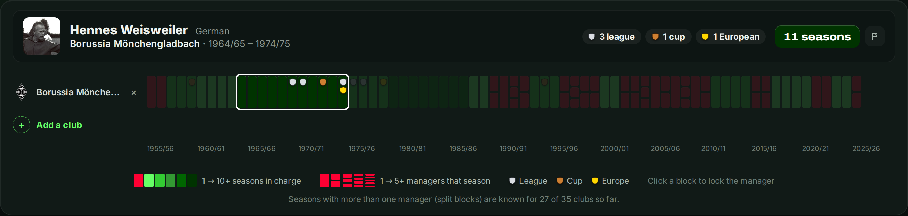
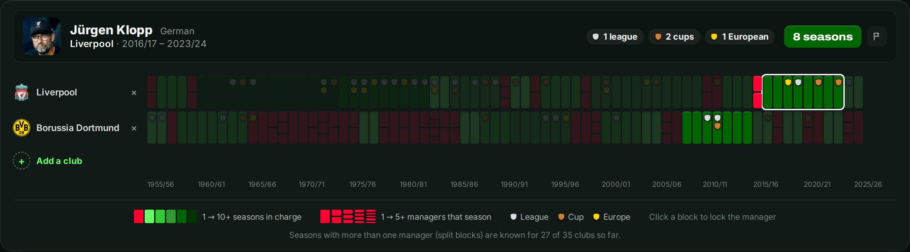

Most managers who win something do it in their first season. That sounds like a law of football: win early, or not at all. But there is another explanation. Maybe managers only win early because most of them never get a second season.
This article follows 1,187 reigns at 35 selected clubs, five in each of seven European countries, from 1955/56 to 2025/26. It asks when a manager won his first counted trophy at that club, not the first trophy of his career. A reign is a run of consecutive seasons as manager of the season at one club; seasons without a known main manager are excluded. The sample includes years outside the top division, and early years at predecessor clubs.
Here, a trophy means a league title, a national cup or a major European trophy, with at most one of each counted per season. Supercups and lower-division titles are excluded. Each season belongs to its main manager, so a trophy can be credited to someone who had already left when it was won. These are season-level records, rather than a complete list of trophies personally won by every coach.
The headline: win early
Of the 1,152 reigns that have ended, 398 brought at least one trophy: just over a third. And of those 398, 284 delivered their first trophy in the very first season. Late bloomers are rare. Among long reigns that won something, only a handful had to wait until the fourth season or later.
Read like that, the lesson for a club seems simple: if it has not worked after a season or two, it will not work. But that conclusion skips a step.
Chicken or egg
Most managers never get the chance to win late. Of the 754 reigns that ended without a trophy, 486 were over after a single season and another 170 after two. A first season is the only season most managers ever get, so of course that is where most trophies are won.
The fair question is therefore a different one: of the managers who did get another season without yet winning a trophy, how many won their first in it? Seen that way, the chances remain broadly similar through seasons two to four.
Data Focus: The Chance of a First Trophy, Season by Season
Of all managers still in charge and still without a trophy at the start of season n, the share who won their first trophy in that season.
- Season 1 25% (296 of 1,187)
- Season 2 20% (79 of 391)
- Season 3 19% (26 of 137)
- Season 4 22% (10 of 46)
- Season 5 15% (2 of 13)
- Season 6 17% (1 of 6)
The first-season chance is 25%; among those retained without a trophy, it is around one in five in seasons two to four. An unsuccessful first season does not, by itself, mean a manager is unlikely to win later. But the later estimates rest on much smaller groups: 46 reigns in season four, thirteen in season five and six in season six. They are too small to establish a precise trend.
One caution. The managers who are given a second or third season without a trophy are not a random group: their clubs may have seen progress worth keeping, or had different expectations. The figures describe what happened to those who stayed. They do not show what would have happened to the managers who left if their clubs had kept them, or prove that waiting causes success.
The starting point matters more
There is a much larger difference between the clubs managers inherit. Split the reigns by whether the club had won anything in the three seasons before the first recorded season of the reign, and two very different starting points appear. This comparison includes only reigns with all three preceding club-seasons in the dataset: 1,124 of the 1,187. It excludes appointments too close to the beginning of the data to judge their recent history.
Data Focus: Taking Over a Winner, or Building One
Club won a trophy in the last three seasons
- Season 1 39% (208 of 530)
- Season 2 31% (37 of 121)
- Season 3 28% (9 of 32)
- Season 4 2 of 10
Club won nothing in the last three seasons
- Season 1 12% (74 of 594)
- Season 2 15% (38 of 246)
- Season 3 16% (15 of 94)
- Season 4 7 of 31
Same measure as above: the share of managers still without a trophy who won one in that season. Only reigns with three preceding club-seasons available are included. The season-four groups are particularly small.
In this sample, a manager who takes over a recent winner is about three times as likely to win in his first season as one who takes over a club with no trophy in the previous three. For recent winners, the observed first-trophy rate falls from 39% in season one to 28% in season three. For clubs without a recent trophy, it rises from 12% to 16%. That is a suggestive contrast, not proof that patience pays more at one kind of club. The retained managers are a selected group in both cases, and a recent trophy is only a rough guide to the strength of the team they inherited.
The ones who waited
The managers who won their first counted trophy in their fourth season or later are few, but the list is remarkable. Hennes Weisweiler waited until his sixth season at Borussia Mönchengladbach for the 1970 league title. The first five columns of his reign have no trophy; the next six contain three league titles, a national cup and a European trophy. His long wait became the opening chapter of a dynasty.
Alex Ferguson won his first trophy at Manchester United, the FA Cup of 1990, in his fourth season. Unlike Weisweiler, he had inherited a recent cup winner: United had won the competition in 1985. Their cases show why the same wait can mean different things at different clubs.
Bill Shankly needed five recorded seasons at Liverpool before the league title in 1964, the first trophy counted here; his earlier Second Division title is outside the measure. Jürgen Klopp won the Champions League in his fourth Liverpool season, counting the half season in which he arrived. Ottmar Hitzfeld at Borussia Dortmund, Bertie Mee at Arsenal and Louis van Gaal at AZ all waited four seasons too.

Thirteen reigns in the dataset brought a first trophy in the fourth season or later. Twelve have all three preceding seasons available; nine of those twelve began at a club with no trophy in that period. The remaining case, Günter Mahlmann at Hamburg, began too close to the start of the dataset to make that comparison. The late winners include several dynasty builders, but they are the successful survivors of the wait. The managers who waited without ever winning belong in the picture too.

What this means
A first season without a trophy is common, and it is not a reliable verdict on what comes next. Among managers retained without a trophy, the chance of a first win remains broadly similar through seasons two to four. The stronger contrast is between inheriting a recent winner and taking over a club without a recent trophy.
Weisweiler, Shankly, Ferguson and Klopp show what can follow a long wait. They do not tell a club how long to wait for every manager. The useful lesson is narrower: judge a first season in the context of the club, and do not mistake the absence of a trophy for proof that no progress has been made.
How this was measured: a reign is a run of consecutive seasons as manager of the season at one club; the first season is the one in which he became manager of the season, even if he arrived during it. Trophies are league titles, national cups and major European trophies, with at most one of each per season, credited to the manager of the season. Reigns still running in 2025/26 count in the season-by-season figures but not in the totals of reigns that have ended. The recent-winner comparison excludes 63 reigns without three preceding club-seasons in the dataset; missing history is not treated as a trophyless history. Each row of the first table uses only reigns that reached that season without a previous trophy. Season five and season six are reported separately, rather than pooling different lengths of exposure. Data up to and including 2025/26.
Explore the Data Yourself

Compare clubs, follow a manager from club to club, or highlight one name across a whole league.
Launch the Interactive Visualization